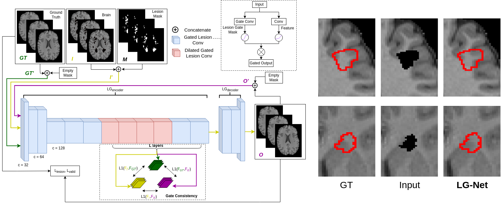

Deep MRI Synthesis Collection
Overview
This is the official collection of deep learnning based MRI synthesis methods. Included a various range of MRI modalities including T1 weighted MRI, diffusion weighted MRI (dMRI), Diffusion Tensor Image (DTI), and Diffusion Fiber Orientation Distribution (FOD).
Our Works
Zihao Tang, Xinyi Wang, Lihaowen Zhu, Mariano Cabezas, Dongnan Liu, Michael Barnett, Weidong Cai, and Chenyu Wang.
 [Code TBD]
[Code TBD]Zihao Tang*, Xinyi Wang*, Mariano Cabezas, Arkiev D’Souza, Fernando Calamante, Dongnan Liu, Michael Barnett, Chenyu Wang, and Weidong Cai.
Zihao Tang, Mariano Cabezas, Dongnan Liu, Michael Barnett, Weidong Cai, and Chenyu Wang.
Highlights
OCE-Net (Diffusion MRI Fibre Orientation Distribution Inpainting)
- Present a Order-wise Coefficient Estimation Network to inpaint the disrupted Fibre Orientation Distribution (FOD) coefficients.
- Order-wise Coefficient Decoders to decode the coefficient independently.
- Explore the analysis on connectome.
LG-Net
- Present an end-to-end solution for Multiple Sclerosis (MS) lesion inpainting on T1 MRI images.
- A specifically designed lesion gate consistency.
- State-of-the-art on computer vision similaritiy metrics and brain tissue volumetric metrics.
BibTeX
If you find our data or project useful in your research, please cite:
@inproceedings{tang2021lg,
title="LG-Net: Lesion Gate Network for Multiple Sclerosis Lesion Inpainting",
author="Tang, Zihao and Cabezas, Mariano and Liu, Dongnan and Barnett, Michael and Cai, Weidong and Wang, Chenyu",
booktitle={International Conference on Medical Image Computing and Computer-Assisted Intervention (MICCAI)},
pages="660--669",
year={2021},
organization={Springer}
}